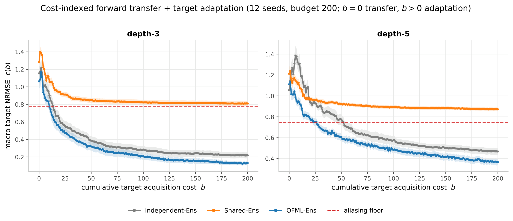
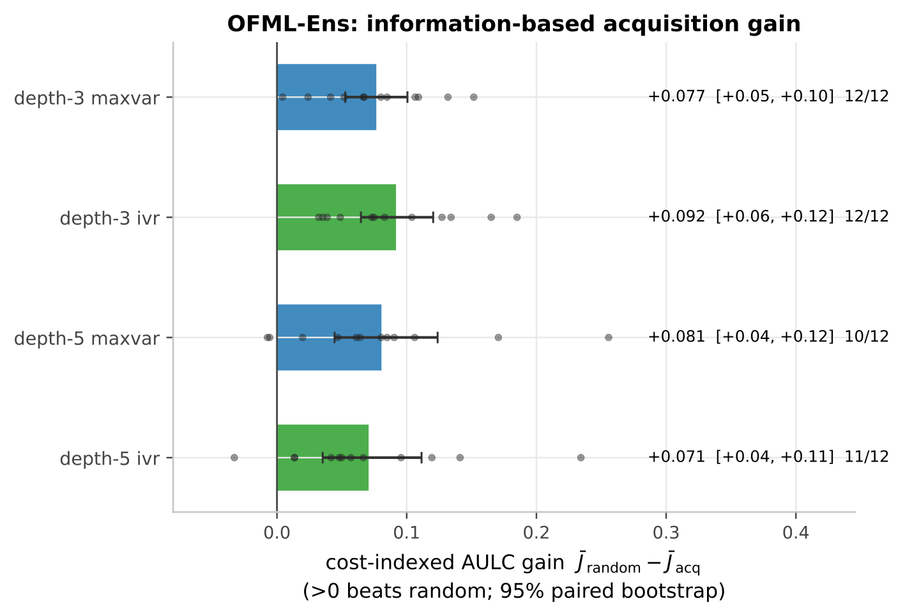

Central result · Forward transfer + target adaptation
The central result of this section. A single cost-indexed curve unifies the whole experimental story: the horizontal axis is the cumulative acquisition cost \(b\) of target labels, and the vertical axis is the macro NRMSE (error normalized by each target's own scale). \(b=0\) is forward transfer (Claim 1), \(b>0\) is active target adaptation (Claim 2), and the level the curve sticks to is the descriptor aliasing floor (the terminal-only / order-blind limit, Claim 1). Three surrogate models are compared under the same balanced Sobol schedule, isolating structure alone.

Under the same fixed schedule, we verify that the cost-indexed macro NRMSE curve \(\eps_m(b)\) simultaneously exhibits (i) forward transfer at \(b=0\), (ii) target adaptation for \(b>0\), and (iii) the fixed-budget error at the budget \(b=B\), all relative to the descriptor aliasing floor as the baseline. The composed OFML-Ens is best at both transfer and adaptation, while the order-ignoring count-descriptor Shared-Ens sticks to the aliasing floor (= predicting the mean). Moreover, for OFML-Ens, model-driven acquisition (MaxVar / IVR) beats random acquisition.
Synthetic GP-composition-field benchmark gpcomp_factory.build_bench(depth, bench_seed). Two depths: depth-3 (operations \(\{A,B\}\)) and depth-5 (\(\{A,B,C,M\}\)). For each depth the target is a pair of protocols that share the same number of operations but differ only in order, exposing order-blind aliasing. All three surrogate models are seed-only 5-member deep ensembles (no bootstrap) at matched capacity (hidden_dim=32): Independent-Ens (learned independently per target, cost 0 falls back to the source mean), Shared-Ens (operation-count-descriptor based, order-blind), and OFML-Ens (composition net, latent_dim=10). At each cost \(b=0..B\) the model is fully retrained from scratch. Figure 2 uses the structural schedule (balanced Sobol, identical evidence for both targets); Figure 4 uses random / maxvar / ivr for OFML-Ens only. Budget \(B=200\), with 12 bench seeds (200–211) as the primary statistical unit. Observation noise \(\sigma=0.02\).
* Main corrections from the previous version: (1) NRMSE normalization (normalized by each target's own scale; raw RMSE is discontinued). (2) Reference-set leak fix — the reference pool for IVR/MaxVar is constructed from mutually disjoint Sobol streams (scramble A/B/C) relative to the test / acquisition pools (previously it was a subsample of test = a transparent leak). (3) Removal of seed confounding — instead of 12 repetitions of a single fixed function (SEED=200), the true benchmark itself is redrawn 12 times via bench_seed (separating the task/pool/noise/model/acq streams and pairing the model-to-model comparison by task).
| Model | Structure | Key settings | Behavior at cost 0 |
|---|---|---|---|
Independent-Ens | independent 5-member MLP per target _MLP(2,32) (no weight sharing source→target or between targets) | lr=1e-2, wd=1e-4, 300 epochs, per-target y standardization | falls back to the source global mean (no learned transfer) |
Shared-Ens | operation-count-descriptor-based 5-member MLP (order-blind = byte-identical predictions on differently ordered targets) | hidden=32, 300 epochs, y standardization | count features only (no order information) |
OFML-Ens | composition net TerminalOnlyOFML (composes per-operation-type latent modules) | latent_dim=10, hidden=32, 400 epochs, 5-member | zero-shot transfer via the composed modules |
All metrics are macro NRMSE. Normalizing by the pooled scale \(s_\star=\sqrt{\sum_p w_p\,\mathrm{mean}((f_p-\bar f)^2)}\) (equal weights \(w_p=1/2\)), we have \[ \varepsilon_m(b)=\sqrt{\textstyle\sum_p w_p\,\mathrm{mean}_x\,(\mu_p-f_p)^2\,/\,s_\star^2},\quad \bar J(B)=\frac1B\int_0^B\varepsilon_m\,db,\quad F_{\mathrm{alias}}=\sqrt{\mathrm{mean}((f_1-f_2)^2)/(4s_\star^2)}. \] Here \(\varepsilon_m(b)\) is the test error at each cost, \(\bar J(B)\) is the cost-indexed AULC (trapezoidal rule), and \(F_{\mathrm{alias}}\) is the lower bound imposed by the indistinguishability of the two same-count, differently ordered targets = the aliasing floor (on a common 48×48 grid).
| Element | Value | Property |
|---|---|---|
| source training | 60 points/source (depth-3: 120 total, depth-5: 540 total) | with noise \(\sigma=0.02\) |
| test | 256 points/target (Sobol scramble A) | noiseless (ground truth) |
| acquisition pool | 400 points/target (scramble B) | disjoint from test |
| IVR reference | 128 points/target (scramble C) | disjoint from test and pool |
| dense grid | 48×48/target | for pooled scale, floor, and sup error |
Hovering over an operation type highlights the same shared operation across all protocols (= weight sharing). This visualizes that the two same-count, differently ordered targets "cannot be distinguished without looking at order."
bench_seed (the 12 values 200–211) is the primary statistical unit, redrawing the true benchmark modules themselves (= 12 function draws, not 12 repetitions of one function). Derived streams are separated: task=bench_seed, pool=bench_seed×7+1, noise=bench_seed×7+2, model=bench_seed, acq=bench_seed×7+3 (pairing the model-to-model comparison by task). Sobol uses sob=bench_seed×100003 + a fixed offset (test +11 / pool +101 / ref +201 / structural schedule +301).OFML-Ens only): maxvar = maximum sample variance, ivr = rank-1 Cohn ALC score \(\sum_R \mathrm{cov}_{rc}^2/(\mathrm{var}_c+\sigma^2)\) (\(\sigma^2=0.02^2\)). The selected point is removed from the acquisition pool by nearest neighbor.Structural curves (Figure 2). OFML-Ens is best at both depths; Shared-Ens sticks to the aliasing floor (because it does not look at order it cannot distinguish the two differently ordered targets, so it effectively "predicts the mean"). Independent-Ens lies in between (cost 0 is the source mean, thereafter learned independently per target).
| Depth (floor) | Model | \(\eps(0)\) | \(\bar J(B)\) | \(\eps(B)\) |
|---|---|---|---|---|
| depth-3 (floor 0.773) | Independent-Ens | 1.154 | 0.362 | 0.219 |
| Shared-Ens | 1.282 | 0.858 | 0.811 | |
| OFML-Ens | 1.063 | 0.281 | 0.131 | |
| depth-5 (floor 0.745) | Independent-Ens | 1.056 | 0.658 | 0.468 |
| Shared-Ens | 1.212 | 0.916 | 0.872 | |
| OFML-Ens | 1.112 | 0.537 | 0.366 |

OFML-Ens only. Cost-indexed AULC gain of model-driven acquisition (MaxVar / IVR) over random, \(\bar J(\text{random})-\bar J(\text{acq})\) (>0 beats random; 95% seed-paired bootstrap, with per-seed scatter). Positive in all four conditions. Click to enlarge.Acquisition gains (Figure 4, OFML-Ens only). Model-driven acquisition beats random (cost-indexed AULC gain \(\bar J(\text{random})-\bar J(\text{acq})\), seed-paired bootstrap 95%): depth-3 MaxVar +0.077 (positive on 12/12 seeds) and IVR +0.092 (12/12); depth-5 MaxVar +0.081 (10/12) and IVR +0.071 (11/12). The gains remain even after fixing the reference-set leak.
A single curve bundles two claims. \(b=0\) (forward transfer): the composed OFML-Ens is best, while the order-blind Shared-Ens starts already at the aliasing floor = Claim 1. The floor (sticking): count descriptors cannot in principle distinguish same-count, differently ordered targets, demonstrating the identifiability limit of terminal-only = Claim 1. \(b>0\) (adaptation) + acquisition gains: directly and actively observing the target terminal drops the error well below the floor, and information acquisition beats random = Claim 2. Introducing the aliasing floor as a common baseline makes "which model breaks the floor and when" readable at a glance.
For the details of forward transfer (linear s0 parity / order / count) see Figure 3a / Figure 3b / Figure 3c; for the direct audit of identifiability see the Φ/Ψ audit; for the terminal-only failure set see Table 1 (C1–C6).
* Limitations: the acquisition gain in Figure 4 is for OFML-Ens only (Independent/Shared-Ens have no acquisition comparison by design). Cost 0 of Independent-Ens is a constant (the source global mean), not learned transfer. The band in Figure 2 is ±1 SE, not a bootstrap CI. The aliasing floor and sup error are 48×48 dense-grid approximations, and macro NRMSE is evaluated on the 256 test points.
The cost-indexed curve directly visualizes the structure of the main theorems. Forward transfer at \(b=0\) depends on identifiability (the rank condition \(\ker\Phi\subseteq\ker\Psi\), Proposition 4). The aliasing floor corresponds to the residual of the transfer diagnostics (Assumption 8: C1–C5). The convergence that breaks the floor for \(b>0\) follows from the global vanishing of the latent-function variance under noisy \(\IVR/\SUR\) on the full support \(\lambda\) (Theorem 2), specialized via the pushforward by the target active correction (Theorem 3) and rescue (Proposition 5). The acquisition gains in Figure 4 should be read as a diagnostic of the bottleneck (coverage / capacity), not as a ranking of acquisition functions.